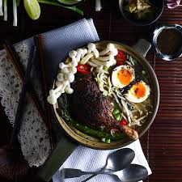

Home
Beef Miso Ramen

Description
This dish is a savory delight to warm you on a cold night.
Ingredients:
- 1 (8 ounce) beef sirloin steak
- ½ cup gltuen-free soy sauce
- 1 teaspoon coconut oil
- 4 cups beef broth
- 2 teaspoons miso paste
- 1 teaspoon minced garlic
- 1 teaspoon sesame oil
- 6 ounces ramen noodles
- salt and ground black pepper to taste
Steps:
- Combine steak and soy sauce in a plastic container with a lid. Marinate in the refrigerator for 2 hours.
- Remove steak from the marinade and shake off excess. Discard the remaining marinade.
- Heat coconut oil in a skillet over medium-high heat. Add steak and cook until firm and reddish-pink and juicy in the center, 3 to 4 minutes per side. An instant-read thermometer inserted into the center should read 130 degrees F (54 degrees C) for medium-rare. Remove from skillet and allow to rest for 10 minutes.
- While the steak is resting, combine broth, miso paste, garlic, and sesame oil in a saucepan over medium heat; bring to a boil. Once broth is at a slow boil, add ramen noodles. Cook until noodles are soft, about 3 minutes. Season with salt and pepper.
- Transfer broth and noodles to 2 bowls. Slice steak and place on top.
- Garnish with halved soft boiled egg and diced green onions.